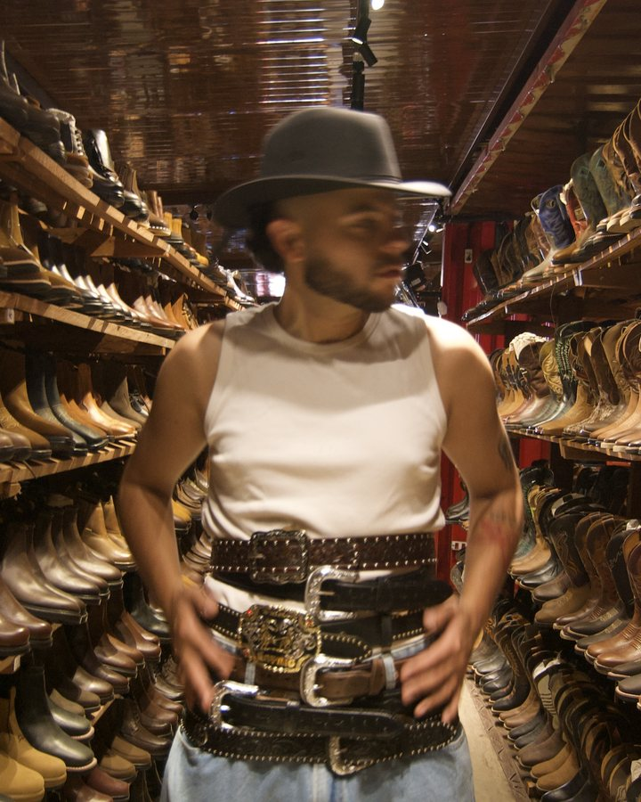

Suspensão
Nunca parado. Pulos e quedas contra o céu azul, com a câmera de baixo.
Sertanejo pra quem ouve sertanejo — e pra quem acha que não ouve.

o artista
Foi assim que um violonista se apresentou, numa praça de Içara, na noite em que Dody decidiu se mudar para São Paulo. A frase virou dois álbuns.
Compositor, Dody assina sozinho ou em parceria a maior parte do catálogo, da letra e da melodia ao conceito de cada disco. As músicas falam de amor, autoestima e sonhos.
o novo álbum
O interior chega na cidade sem tirar a bota.
Um personagem do campo em queda livre pela cidade: nunca parado, sempre no meio de um salto, de uma fuga, de uma chegada. Deselegante transita entre diferentes sonoridades, do regionalismo da música gaúcha ao sertanejo, corrido tumbado e flamenco.
Desele
gante
Sete projetos lançados desde Te Vi Passar.
a estética visual do disco
Nunca parado. Pulos e quedas contra o céu azul, com a câmera de baixo.
Bota, chapéu, ovelha e grama tratados como editorial. O campo com humor, nunca cartão-postal.
O retrovisor da mudança e a cidade à noite no flash. Olhar pra trás enquanto vai.
A palavra invade a foto: outdoor com versos no meio do campo e o nome do disco rabiscado à mão.
quem escuta
de quem ouve o Dody no Spotify vira seguidor. A média do mercado fica entre 10% e 15%.
Criciúma lidera o Instagram. São Paulo lidera o Spotify. A mudança do disco já está desenhada no mapa de quem escuta.
fonte: chartmetric · spotify e instagram
redes
Violão na escada, o manual do caipira em São Paulo e o desafio Pula Comigo.
Johayna El Mouallem
mouallem management